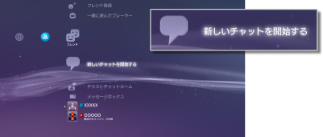
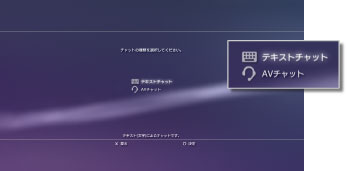
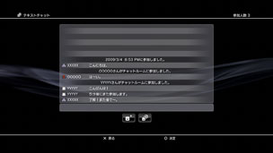

フレンド > テキストチャットをする > テキストチャットを開始／終了する
テキストチャットを開始／終了する
この機能を使うには、システムソフトウェアのアップデートが必要になる場合があります。
フレンドリストに登録した相手と、テキストチャットができます。
テキストチャットを開始する
1. |
|
|---|---|
|
 |
|
2. |
|
|
 |
|
3. |
テキストチャットルームの名前を入力し、［確定］を選ぶ。 |
4. |
招待したいフレンドを選び、［確定］を選ぶ。 |
|
 |
 （新しいチャットを開始する）を選ぶ。
（新しいチャットを開始する）を選ぶ。 （テキストチャット）を選ぶ。
（テキストチャット）を選ぶ。ヒント
- あらかじめPSNSMにサインインしておく必要があります。
- テキストチャットではチャット招待のメッセージは送信されません。
- テキストチャットルームには最大16人参加できます。
- チャットの利用が制限されているときは、テキストチャットを利用できません。視聴年齢制限（パレンタルロック）機能について詳しくは、［XMB™の基本操作］＞［視聴年齢制限（パレンタルロック）機能を使う］をご覧ください。
テキストチャットに参加する
テキストチャットに招待されると、画面右上に通知メッセージが表示されます。 （フレンド）から（テキストチャットルーム）を選び、参加するチャットルームを選びます。
（フレンド）から（テキストチャットルーム）を選び、参加するチャットルームを選びます。
ヒント
 （設定）＞
（設定）＞  （本体設定）＞［通知メッセージ］で［表示しない］に設定していると通知メッセージが表示されません。
（本体設定）＞［通知メッセージ］で［表示しない］に設定していると通知メッセージが表示されません。- ゲームによっては、ゲーム中にテキストチャットに参加できます。ワイヤレスコントローラのPSボタンを押し、 （フレンド）＞ （テキストチャットルーム）から参加したいチャットルームを選びます。PSボタンを押すとゲームの画面に戻ります。
- 同時に3つのチャットルームに参加できます。
- （テキストチャットルーム）に表示できるチャットルームは20個までです。
チャットルームから退出する
テキストチャットの画面で ボタンを押し、チャットルームを閉じます。退出したいチャットルームを選んで
ボタンを押し、チャットルームを閉じます。退出したいチャットルームを選んで ボタンを押し、オプションメニューで［退出］を選びます。
ボタンを押し、オプションメニューで［退出］を選びます。
ヒント
PS3™の電源を切ったり、PSNSMからサインアウトすると、チャットルームから自動的に退出します。チャットルームから退出したあと、もう1度チャットルームに参加しても、退出している間のチャットの履歴は表示されません。
チャットルームを削除する
削除したいチャットルームを選んでボタンを押し、オプションメニューで［削除］を選びます。
操作パネルを使う
画面上の操作パネルで次の操作ができます。
 |
フレンドを誘う | テキストチャットルームにフレンドを招待する |
|---|---|---|
 |
参加者一覧 | テキストチャットの参加者一覧を表示する |